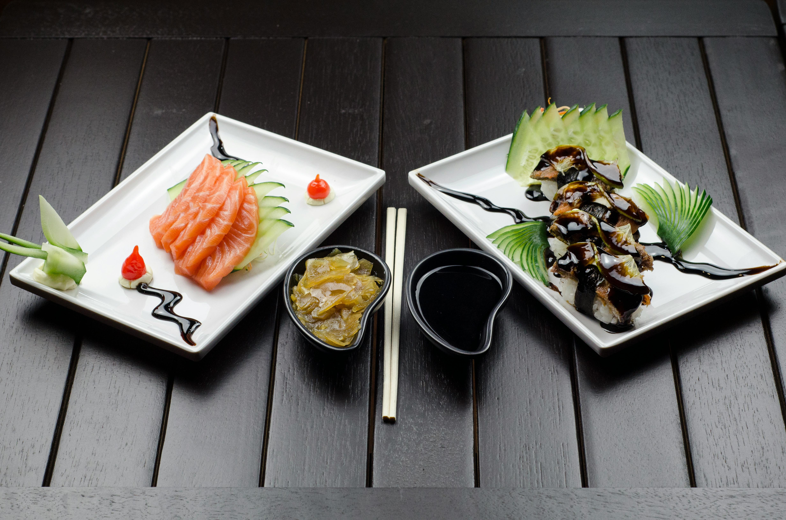
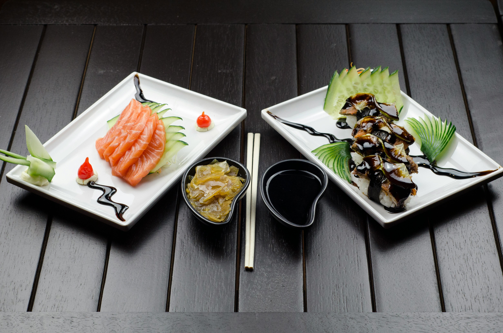

Nuestro menú, cuidadosamente elaborado, destaca por la calidad excepcional de sus ingredientes y la maestría en su preparación, lo que nos ha valido múltiples reconocimientos en el ámbito culinario...
Desde exquisitas tapas tradicionales hasta innovadores platos internacionales, cada creación refleja un compromiso inquebrantable con la excelencia y una profunda pasión por la cocina.


 
